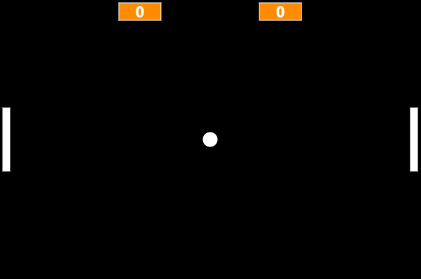

Projeto Remake jogo Pong (1972)
Pong é um jogo eletrônico de esporte de arcade com temática de tênis de mesa, com gráficos bidimensionais, desenvolvido pela Atari e lançado originalmente em 1972. Foi um dos primeiros jogos de arcade. Nesse projeto o objetivo era refazer o jogo utilizando o JavaScript.
O desenvolvimento desse projeto foi proposto em um dos cursos da Alura que tinha como objetivo o aprendizado da lógica de programação. Esse foi o primeiro projeto que eu fiz com JavaScript, achei uma experiência bem interessante e ao mesmo tempo muito desafiadora.
Use as teclas W e S, para mover sua raquete respectivamente para CIMA e para BAIXO, o seu objetivo é marcar a maior quantidade de pontos possíveis no seu oponente.
Minha Opinião
O jogo ficou bem legal para um primeiro projeto, porém, ainda tem alguns bugs a serem resolvidos, e também quero adicionar algumas funcionalidades novas, por exempolo uma página que permita que o usuário escolha jogar contra a máquina ou contra outro player que esteja com ele. Adicionar também alguns níveis de dificuldade seria bem legal. Espero que tenham gostado da experiência, muito obrigado!